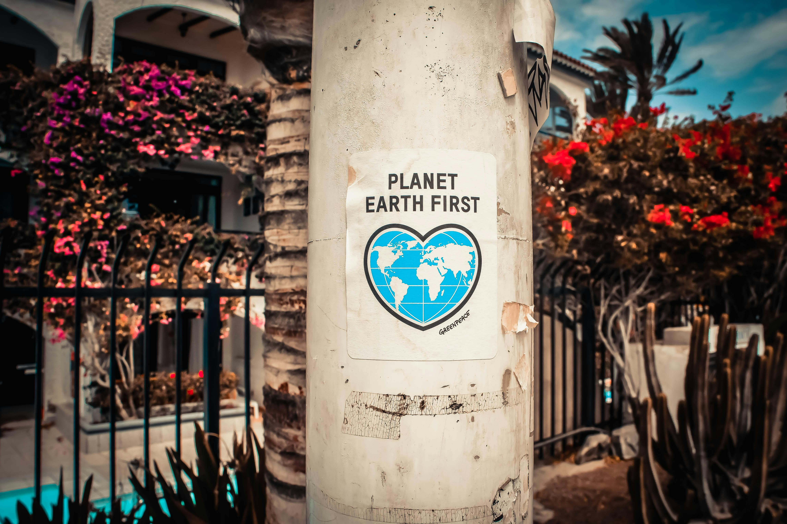

Over €1.2 million spent on political and social issue ads in Finland during election month — with political parties and even Sweden’s state-owned Vattenfall among top spenders.
On Sunday, April 13th, Finns voted in two elections held simultaneously, choosing representatives for city and municipal councils, as well as the newly established wellbeing county boards. The competition for votes was fierce, and one of the main battlegrounds was Meta’s platforms.
According to the Meta Ad Library Report, between March 25th and April 25th, 2025, more than €1.2 million was spent on Meta ads in Finland related to social issues, elections, or politics. A total of 3,433 independent advertisers participated — from individual candidates to party organizations, and from small nonprofits to multinational corporations.
The average spending per advertiser was around €700, with 2,310 of them spending less than €200. While most actors operated on small budgets, some stood out — and one party dominated the field.
In a category of its own was Kokoomus, the Moderate Party, which spent €130,943 on Meta ads. That’s over 10% of all political and advocacy spending in Finland during the 30-day period. A total that includes nonprofits and private companies whose ads met Meta’s criteria for advocacy advertising.
The Moderate Party is a traditional right-wing party — you could sum it up by saying: old-school conservatives have money to throw around.
“Moderate Party is known in Finland for being especially skilled at using marketing communication tools, pioneers in how they work with advertising agencies,” says Touko Sipiläinen, a NGO leader with more than a decade of experience in digital communications and political advertising. He has worked with major NGOs, government bodies, and political parties.
But before we dive into the data, let’s take a quick look at the structure of Finnish regional politics.
In municipal elections, Finns elect council members in 309 areas — ranging from the capital, Helsinki, with 650,000 residents to tiny Lestijärvi, home to just 725.
The division of a population of 5.5 million into 309 local councils has long been a topic of political debate. Some believe that the smallest areas should be forced to merge with their larger neighbors.
City and municipal councils hold significant power over local matters like schools, infrastructure, and public transportation.
Until 2021, municipalities, regardless how small or rural, were also responsible for organizing healthcare and social services.
But with many areas too small to maintain their own health and social services, these duties were reassigned to a new level of administration: wellbeing counties.
This is only the second election cycle for wellbeing counties, so in this analysis, we focus on the results of the municipal elections.
Meta Ad Library categorizes advertisers based on who paid for each individual ad.
Finnish political parties operate through networks of associations: a national umbrella organization, regional branches like Helsinki’s National Coalition, and thematic groups such as the Green Women. Individual candidates also purchase ads under their own names.
This analysis includes all spending by each party’s full organizational network during the one-month period. However, ad budgets of individual candidates are excluded.
The analysis only covers the final, most intense weeks of the campaign, not the entire election period. As a result, the figure for money spent per vote is only indicative. Still, it’s a good tool to compare how efficiently parties converted spending into support.
Touko Sipiläinen points out that parties advertise in places other than the internet, and he believes that, for example, The Finns Party’s small budget is based on the idea that their potential support can be found elsewhere.
"My understanding is that the Finns Party invests quite a lot in reaching people who drive, both through radio ads and things like roadside billboards and ads on the backs of buses," he explains.
Sipiläinen has previously worked as the communications director for The Left Alliance, so he is well aware of the scale of the party's election budgets.
"The Left Alliance’s municipal election budget is at most 500,000 euros. That includes absolutely everything," he clarifies and begins to list: the coffee cups and tents purchased for campaign events, the vests worn by campaigners, and the travel expenses for the party leader’s national campaign.
"Meta’s platforms have taken ten percent or more of the total budget. That’s a relatively big slice."
He also notes that digital advertising has already gone through an evolution. There was a time when targeting could be done much more precisely and oversight was weaker.
"After the Cambridge Analytica scandal, the attributes available for targeting have been reduced — and quite radically so."

Greenpeace is one of several NGOs investing significantly in Meta advertising.
Touko Sipiläinen is currently the head of Greenpeace Finland. Under his leadership, the organization spent about €7,000 on Meta advertising during the one-month period analyzed. According to Sipiläinen, this is roughly what the organization typically spends in a month — meaning over €80,000 annually. That’s equivalent to the annual salary of one employee and, in the context of Finnish NGOs, a significant amount.
According to Sipiläinen, the main goal of advertising is clear: to gain more monthly donors. Ads may, for example, invite people to sign a petition — and once they do, the organization uses various strategies to guide them toward membership.
"When someone signs a petition for a good cause, they’ll receive an email, a phone call, and, in the best case, even a mailed letter asking if they’d like to become a monthly donor."
The nonprofits spending the most are typically the Finnish branches of large international organizations. And as one might expect, nonprofits, whose entire mission is to drive social impact, tend to invest more in advocacy advertising than private companies do.
Greenpeace is one of several NGOs investing significantly in Meta advertising.
The companies that spent a few thousand euros on advocacy ads were all Finnish journalistic media outlets — except for All Things Live Finland, an international event organizer. Most striking on the list is the Swedish state-owned company Vattenfall, which ran ads promoting a transition to cleaner energy. At first glance, one might assume a Swedish energy company is aligned with environmental NGOs.
"In Vattenfall’s case, the ads are essentially about branding," Sipiläinen begins. "What’s interesting is that the message is so overtly societal that Meta has categorized them as advocacy ads."
But what does Sipiläinen, who has spent his entire career on social campaigning, think about the idea that social media ads can shape public opinion in Finland?
"My view is that public opinion can be moved through campaigning, especially when it comes to people who are on the fence about an issue," he says.
Those with firmly held views, strongly tied to a particular corner of the political map, are much harder to sway with campaigns.
"But if someone is undecided, the impact can be significant. If the ad is skillfully done, it can be incredibly powerful."
Finland’s political system is built on multi-party coalitions, meaning there’s a substantial number of so-called swing voters who switch parties between elections. This contrasts with two-party systems like in the U.S. or the U.K., where political identities are more fixed.
"In the U.S., people align with either Democrats or Republicans. But in Finland, many political issues remain ‘unclaimed’ because the debate isn’t as polarized — it’s multipolar."
That makes Finland a country where, with a relatively small budget and a well-crafted campaign, it’s possible to influence the direction of politics.
As part of the analysis, Finnish Meta advertisers were manually categorized into political parties, private companies, workers unions, other kinds of non-profits (inc. NGO’s, foundations, associations and small advocacy groups), municipalities/cities, wellbeing services counties and national state bodies. Advertisers who spent less than €100 were excluded, as Meta does not provide exact figures for those cases.
The party-specific analysis focuses solely on the nine parliamentary parties. Although these were regional elections, using the current parliamentary division is an established practice in Finland. In practice, parties outside of Parliament are so small that they are not relevant for a nationwide analysis.
The analysis was conducted in Jupyter Notebook using Python and Pandas. Visualizations were created with Datawrapper and finalized in Adobe Illustrator.
All images are from the Pexels photo service.
Analysis, interviews, text, data visualizations, and website by Rosa Kettumäki.